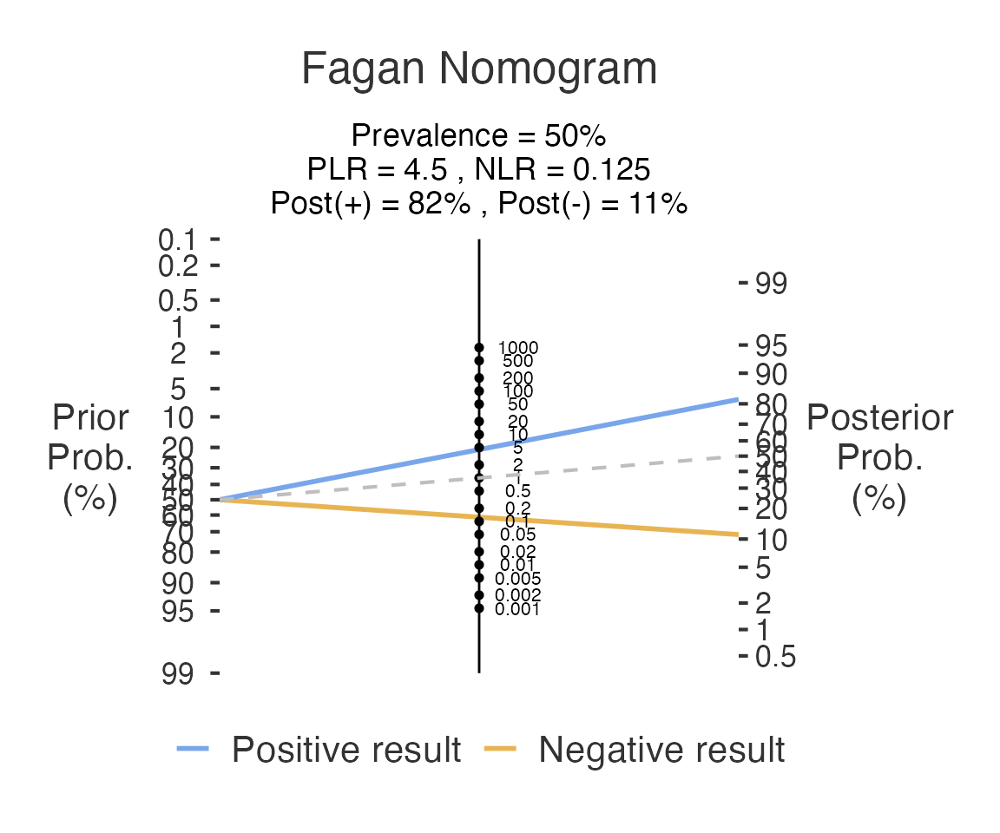

This article shows the two basic diagnostic-accuracy analyses:
-
Medical Decision (
decision(), meddecide > Decision) works from raw data: one column for the reference standard, one for the test. -
Medical Decision Calculator
(
decisioncalculator(), meddecide > Decision Calculators) works from the four cell counts.
From raw data: decision()
A tiny example file ships with the package.
df_dec <- read.csv(system.file("extdata", "decision_example.csv", package = "meddecide"))
df_dec$gold <- factor(df_dec$gold)
df_dec$newtest <- factor(df_dec$newtest)
str(df_dec)
#> 'data.frame': 10 obs. of 2 variables:
#> $ newtest: Factor w/ 2 levels "0","1": 2 2 1 2 1 1 2 1 1 2
#> $ gold : Factor w/ 2 levels "0","1": 2 1 2 2 1 1 2 2 1 1Columns are passed by name. Name the positive and the negative level of both the reference standard and the test; all four are required, so the analysis never guesses which level means “disease”.
res <- decision(
data = df_dec,
gold = "gold",
goldPositive = "1",
goldNegative = "0",
newtest = "newtest",
testPositive = "1",
testNegative = "0",
ci = TRUE
)
res$cTable$asDF # 2 x 2 table
#> newtest GP GN Total
#> "Test Positive" Test Positive 3 2 5
#> "Test Negative" Test Negative 2 3 5
#> "Total" Total 5 5 10
res$ratioTable$asDF # sensitivity, specificity, PPV, NPV, likelihood ratios
#> tablename Sens Spec AccurT PrevalenceD PPV NPV LRP LRN
#> "1" NA 0.6 0.6 0.6 0.5 0.6 0.6 1.5 0.6666667
res$epirTable_ratio$asDF # sensitivity, specificity, PPV, NPV with 95% CIs (ci = TRUE)
#> statsnames est lower upper
#> "se" Sensitivity 0.6 0.1466328 0.947255
#> "sp" Specificity 0.6 0.1466328 0.947255
#> "pv.pos" Positive predictive value 0.6 0.1466328 0.947255
#> "pv.neg" Negative predictive value 0.6 0.1466328 0.947255With only 10 cases the confidence intervals are very wide; the example only shows the mechanics.
From counts: decisioncalculator()
calc <- decisioncalculator(TP = 90, FN = 10, TN = 80, FP = 20,
ci = TRUE, fagan = TRUE)
calc$epirTable_ratio$asDF # estimates with 95% confidence intervals
#> statsnames est
#> "ap" Apparent prevalence 0.5500000
#> "tp" Reference-standard prevalence in this sample 0.5000000
#> "se" Test sensitivity 0.9000000
#> "sp" Test specificity 0.8000000
#> "diag.ac" Diagnostic accuracy 0.8500000
#> "pv.pos" Positive predictive value 0.8181818
#> "pv.neg" Negative predictive value 0.8888889
#> "p.rout" Proportion of subjects with outcome ruled out 0.4500000
#> "p.rin" Proportion of subjects with outcome ruled in 0.5500000
#> "p.tpdn" False-positive rate among outcome-negative subjects 0.2000000
#> "p.tndp" False-negative rate among outcome-positive subjects 0.1000000
#> "p.dntp" False-discovery proportion among test-positive subjects 0.1818182
#> "p.dptn" False-omission proportion among test-negative subjects 0.1111111
#> lower upper
#> "ap" 0.47824931 0.6202464
#> "tp" 0.42865843 0.5713416
#> "se" 0.82377740 0.9509953
#> "sp" 0.70815731 0.8733444
#> "diag.ac" 0.79284130 0.8964505
#> "pv.pos" 0.73325967 0.8852586
#> "pv.neg" 0.80514136 0.9454144
#> "p.rout" 0.37975359 0.5217507
#> "p.rin" 0.47824931 0.6202464
#> "p.tpdn" 0.12665555 0.2918427
#> "p.tndp" 0.04900469 0.1762226
#> "p.dntp" 0.11474139 0.2667403
#> "p.dptn" 0.05458560 0.1948586
calc$plot1 # Fagan nomogram
The Fagan nomogram shows how a positive or negative result moves a
pre-test probability to a post-test probability through the likelihood
ratios. By default the pre-test probability is the prevalence in the
table; set pp = TRUE and pprob to use a
prevalence from your own population.
See also
- Co-Testing Analysis and Sequential Testing for two tests.
- Analysis Without Gold Standard when there is no reference standard.